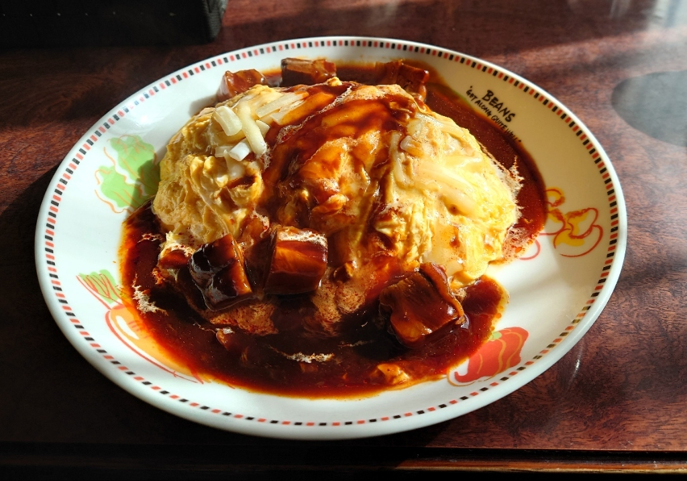
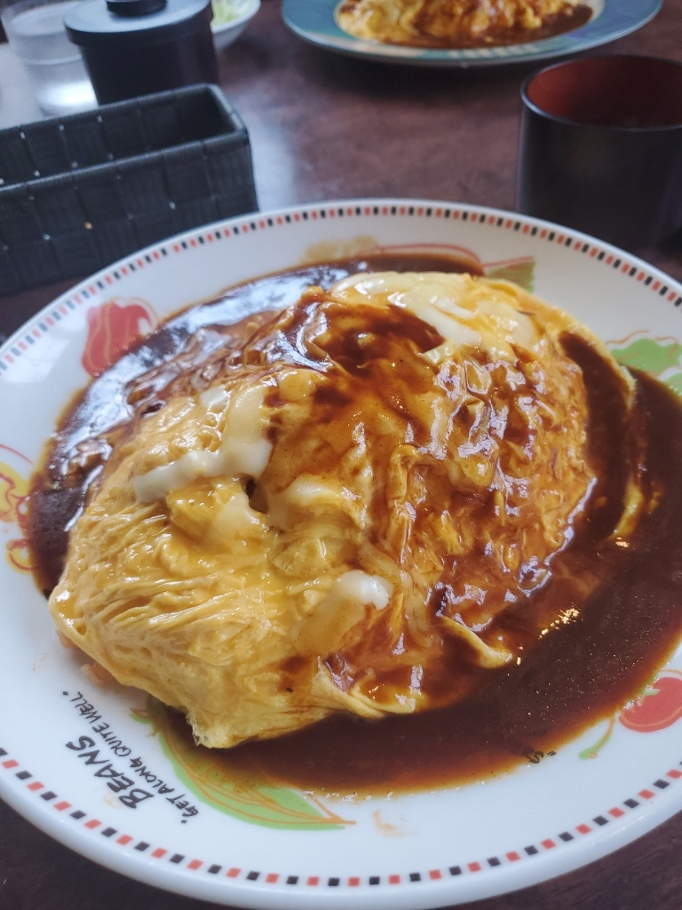
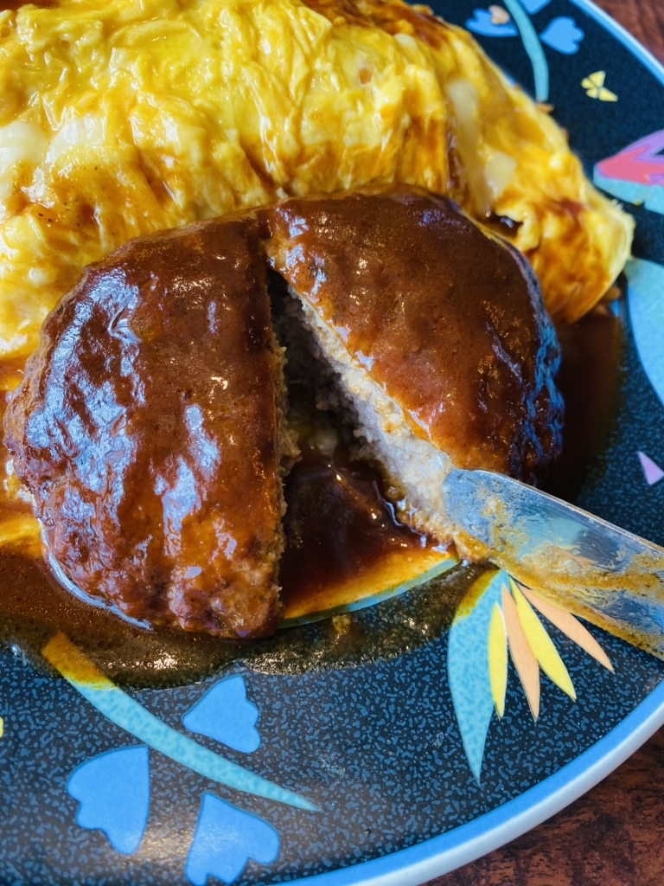
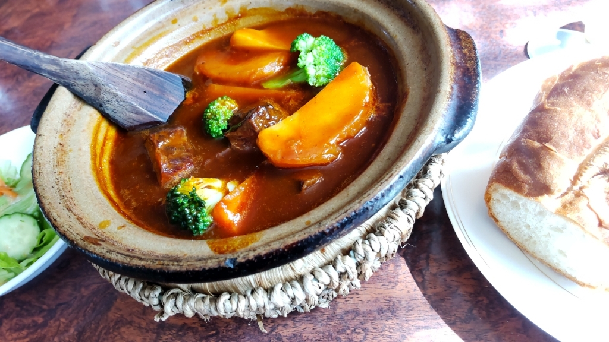
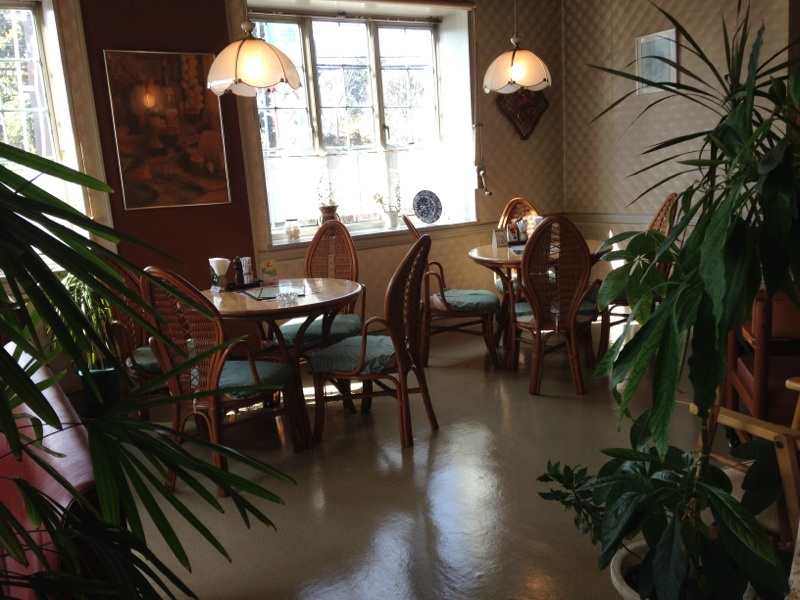
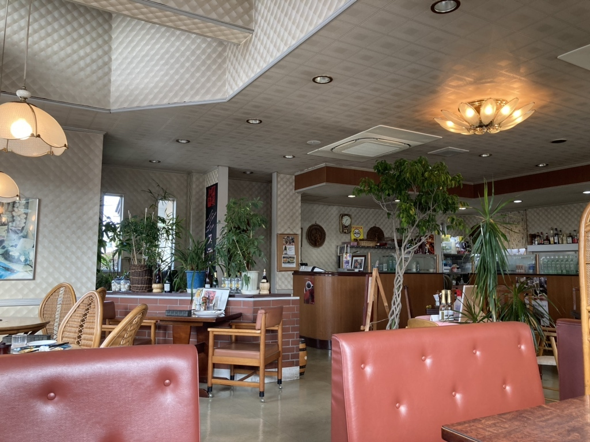
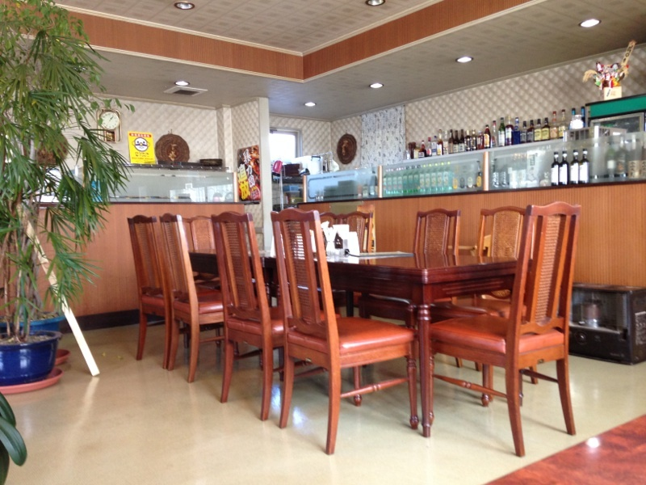

不定休のため、臨時にお休みをいただくことがございます。お越しの前にお電話でご確認ください。
Restaurant
オムライスの包み。中身は五通り。

薄焼き卵で包み、デミグラスソースをたっぷりとかけてお出しします。青い花柄の絵皿は、当店で長く使っておりますお皿です。
中身はエビフライ、ポークカツ、ハヤシ、定番のチキンライス、納豆と五通りご用意しております。


赤ワインでじっくりと煮込んだビーフシチューと、牛タンシチューをご用意しております。ハヤシオムライスのソースにも、同じ煮込みを使っております。

36席、10人用のテーブルも1卓ご用意しております。個室はございません。籐の椅子と観葉植物を配した客席で、お一人でもご家族・グループでもお使いいただけます。


17:00からは夜の営業に変わります。お酒もご用意しております。ビール、ワイン、焼酎、カクテルなど、お食事に合わせてお選びいただけます。

「お肉も食べたいのでポークカツオムライスを注文！……私の好みの味でとても良かったです」
お客様の声より
「見た目は昔ながらの王道スタイルで、ケチャップの香りが食欲をそそります」
お客様の声より
「昔ながらの地元に愛されるお店です！店内はテーブル席でかなり広いです！」
お客様の声より
「棚にはワインなんかも飾ってあり、とても落ち着くおしゃれな雰囲気になっています」
お客様の声より
| 住所 | 〒306-0212 茨城県古河市久能1099-84 |
|---|---|
| 電話 | 0280-92-0295 |
| 営業時間 | 昼 11:00〜14:00 ／ 夜 17:00〜22:00 14:00〜17:00は休憩をいただいております。 |
| 定休日 | 不定休。お越しの前にお電話でご確認ください。 |
| お席 | 36席（10人用のテーブルもございます）。個室はございません。 |
| 駐車場 | 駐車場がございます。 |
| お支払い | 現金のみ承っております。 |
お支払いは現金のみ承っております。